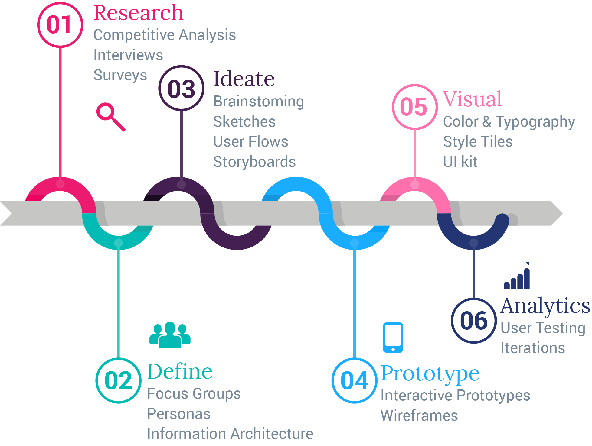

About
I am Sofia, a Certified UX Designer by following an intensive 10 months UX Design Specialization course from Careerfoundry.
I have a BS degree in Graphic design being experienced mainly on logos, packaging, and illustrations. I feel eager to continuously expand my knowledge on new topics; my exploitations thrive when satisfied customers provide positive feedback and become loyal.
This perception led me to the UX Design process for enhancing user experience, stretching design potential and simultaneously rendering customers satisfaction total. I have expanded my experiences to design and develop web responsive applications from scratch.
I have gained knowledge of how to approach, understand the real problems and design better solutions for the product's audience.
I have reached all these aspects through:
- Research
- Analysis
- Real-time interviews
- Best practices in UX Design
You want to find out more about my experience?
View my CVDesign Process
“Design is not just what it looks like and feels like. Design is how it works.” — Steve Jobs.
Some Design Tools I use
Low Fidelity
At the ideation phase I start sketching quickly with pen and paper.Then I am using wireframing tools as Balsamiq and Marvel. Both low and mid fidelity prototypes are following with a lot of annotations and then test them with real users.
High Fidelity
These are highly detailed wireframes which they actually fill in the details that are missing in their low-fidelity and contain elements are presented the final product. For the High Fidelity wireframes I use software depending for the operating system as Photoshop, Sketch, Sigma or Illustrator.The final prototype is tested with real-time users by using an interactive tool is called Invision or Marvel.
Developing
I have developed this responsive portfolio website from scratch by using code languages as HTML, HTML5, CSS, JS. Since I have included the content and styling, I have conducted a usability testing to test the accesibility of the site. Improvements and iterations of usability testing are following before the final product will be launched.